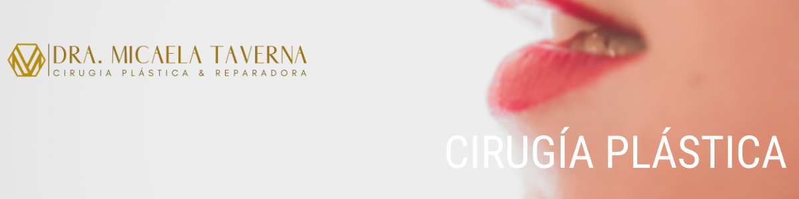

Medicina Estética

-
HILOS TENSORES
Los hilos tensores pueden ayudar a generar mayor proyección o sustentación según necesitemos. Hay que tener en cuenta que no corrigen flaccidez y caída marcada de los tejidos. Estos se pueden utilizar en casos de pérdida del contorno facial, falta de definición en pómulos, surcos nasogenianos marcados, pliegues verticales del cuello. Producen un efecto inmediato por la tracción que producen y a largo plazo ya que ayudan mediante la formación de tejido colágeno a generar una malla de sostén que contrarresta el efecto de la gravedad. Son completamente biodegradables.